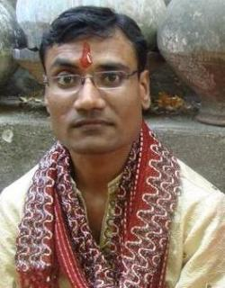

कई बार कैसे कैसे मजेदार वाकये हो जाते हैं कि वे हमें जिन्दगी भर याद रह जाते हैं। कल ऐसा ही वाकया मेरे साथ हुआ।
कल शाम (2-04-2009) भोपाल रेल्वे स्टेशन पर मैं, मेरी बहन किरन और चाचीजी सिकन्दराबाद आने के लिये ट्रेन का इंतजार कर रहे थे। भारतीय रेल की परंपरा को कायम रखते हुए संपर्क क्रान्ति एक्सप्रेस मात्र एक घंटे लेट थी।
हम तीनों आपस में बात कर ही रहे थे कि मैने एक आदमी को देखकर एकदम से चाचीजी से कहा देखो डायचन्दजी! (डायचन्द जी हमारे रिश्तेदार हैं) चाचीजी ने देखा वाकई डायचन्दजी आ रहे थे हम बात कर ही रहे थे कि डायचन्दजी पास आये तो पता चला कि वे डायचन्दजी से मिलती जुलती शक्ल वाले कोई और ही इन्सान हैं।
थोड़ी देर बाद किरन बोली देखो शेषगिरी राव! ( शेषगिरी राव मेरे चाचाजी के खास दोस्त हैं) हमने देखा कि शेषगिरी राव आ रहे हैं पर ये भी शेषगिरी राव नहीं थे। हम इस बात पर खुब हंस ही रहे थे कि एक युवक मेरे सामने से अपने दोस्त के साथ बात करते निकले मैने तुरंत उन्हें आवाज दी नितिन जी – नितिनजी, पर नितिनजी ने सुना ही नहीं। चाचीजी और किरन मजाक करने लगे आज सबको मिलती जुलती शक्ल वाले इन्सान कैसे दिख रहे हैं! 

मेरा मन नहीं माना मैं उन नितिनजी के पीछे भागा पीछे से ध्यान से देखा वे हल्के से लंगड़ा कर चल रहे थे और कपड़े भी नितिनजी के व्यक्तित्व से मेल खाते नहीं दिख रहे थे, मैने आज तक नितिनजी को ऐसे कपड़े पहले नहीं देखा था, पर फिर भी मन नहीं माना मैं पीछे चलता रहा, अब वे स्टेशन के मेन गेट पर खड़े खड़े अपने दोस्त से बातें करने लगे। मैं एकदम उनके पीछे खड़ा हो गया कि शक्ल से कन्फ्यूजन हो सकता है आवाज से तो नहीं। आवाज से तो पता चल जायेगा कि वे नितिनजी हैं या नहीं।
कुछ देर खड़ा रहा पर स्टेशन के शोरगुल में उनकी आवाज मुझे सुनाई नहीं दी, अब मैं उनके सामने खड़ा हो गया शायद उनकी नजर मुझ पर पड़ जाये तो हो सकता है कि वे अगर नितिनजी ही हों तो मुझे पहचान लेंगे पर उनकी नजर मुझ पर पड़ी ही नहीं और मेरी इतनी हिम्मत नहीं हुई कि मैं उनसे जाकर पूछ लूं कि आप नितिनजी हैं या कोई और…।
थक कर मैं वापस अपने परिजनों के पास आ गया और चाचीजी ने भी खासा मजाक उड़ाया पर मेरा मन नहीं मान रहा था मैने कहा इस बात का पता कल लगाना ही पड़ेगा।
आज नितिनजी ओनलाईन दिखे, देखिये हम दोनों के बीच क्या बात हुई
4:21 PM me: नितिनजी, नमस्कार।
क्या आप कल भोपाल रेल्वे स्टेशन पर थे?
4:22 PM Nitin: jee haa
namaste maalik
kyo? aap bhi the?
4:23 PM me: हाँ, मैने आपको देखा भी, आवाज भी दी पर आपने सुना नहीं, तो आपका पीछा भी किया, आपके पीछे कई देर खड़ा रहा
आप किसी दोस्त के साथ थे
मेरी ट्रेन १ घंटे देर से थी
4:25 PM Nitin: arrre?
Sampark Kranti se aaye ho kya?
usi train me tha mai bhi
me: हाँ
देखा आपने जिन्हें मैं नितिनजी समझ रहा था वे नितिनजी ही थे। कैसा अजब संयोग था। आगे की बातचीत फोन पर हुई तब पता चला कि वे उसी ट्रेन के S2 कोच में थे और मैं S1 में|
ऐसा कोई वाकया कभी आपके साथ भी हुआ है? 
नितिन बागला जी हिन्दी के जाने माने ब्लॉगर हैं।